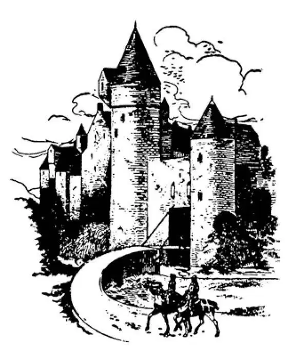
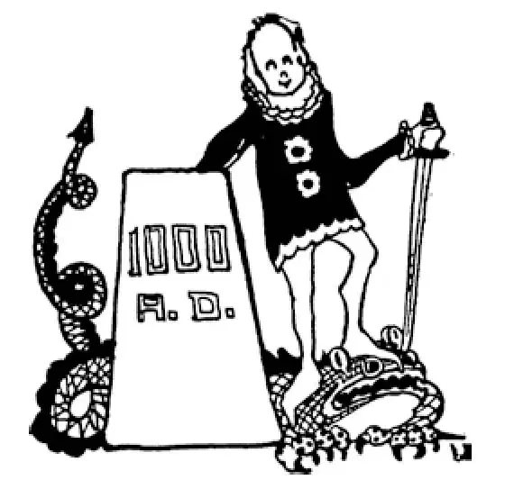

50
Real Castles
真正的城堡

You may think that castles belong only in fairy tales of princes and princesses.
But about the Year 1000 there were castles almost everywhere over Europe, and they were not fairy castles but real ones with real people in them.
After the downfall of Rome in 476, the Roman Empire was broken to pieces like a cut-up puzzle-map, and people built castles on the pieces, and they kept on building castles up to the 1400's. This is why and how people built them and why they at last stopped building them.

Castle, drawbridge, moat, and knights
城堡、吊桥、护城河和骑士
Whenever any ruler, whether he was a king or only a prince, conquered another ruler, he gave to his generals, who had fought with him and helped him to win, pieces of the conquered land as a reward instead of paying them in money. The generals in turn gave pieces of their land to the chief men who had been under them and helped them in battle. These men who were given land were called lords or nobles, and each lord was called a vassal of him who gave the land. Each vassal had to promise to fight with his lord whenever he was needed. He could not make this promise lightly in an offhand way, however. He had to do it formally so that it would seem more binding. The vassal had to kneel in front of his lord, and make the solemn promise to fight when called upon. This was called doing homage . Then once a year, at least, thereafter, he had to make the same promise over again. This method of giving away land was known as the Feudal System.
Each of these lords or nobles then built himself a castle on the land that was given him, and there he lived like a little king with all his workpeople about him. The castle was not only his home, but it had to be a fort as well to protect him from other lords who might try to take his castle away from him. He usually placed it on the top of a hill or a cliff, so that the enemy could not reach it easily, if at all. It had great stone walls often ten feet or more thick. Surrounding the walls there was usually a ditch called a moat filled with water to make it more difficult for an enemy to get into the castle.
In times of peace, when there was no fighting, the men farmed the land outside the castle; but when there was war between lords, all the people went inside the castle walls, carrying all the food and cattle and everything else they had, so that they could live there for months or even years while the fighting was going on. A castle, therefore, had to be very large to hold so many people and animals for so long a time, and often it was really like a walled town.
Medieval women managed many of the things that went on inside the castle— cooking, spinning thread, weaving cloth, overseeing the servants, and taking care of the animals. When the men were away at war, sometimes for months or even years at a time, the women were in charge of all the farming activities and the family's money as well. Because there were so many wars, many women became widows. In that case, they took total charge of the family estates.
Inside the walls of the castle were many smaller buildings to house the people and animals and for cooking and storing the food. There might even be a church or chapel. The chief building was, of course, the house of the lord himself and this was called the keep .
The main room of the keep was the Great Hall, which was like a very large living room and dining room combined. Here meals were served at tables which were simply long and wide boards placed on something to hold them up. These boards were taken down and put away after the meal was over. That is where we get the names boarding and boarding house . There were no forks nor spoons nor plates nor saucers nor napkins. Everyone ate with his fingers and licked them or wiped them on his clothes. Table manners were more like stable manners. The bones and scraps they threw on the floor or to the dogs, who were allowed in the room. Itchy scratchy! What a mess! At the end of the meal towels and a large bowl of water were brought in so that those who wished might wash their hands. Do you suppose anybody washed the floor?
After dinner the household was entertained during the long evenings with songs and stories by men called minstrels, who played and sang and amused the company.
Shut up within the castle walls, it seemed as if the lord and his people would be absolutely safe against any attacks of his enemies. In the first place, any enemy would have had to cross the moat or ditch filled with water, which surrounded the castle. Across this moat there was a drawbridge to the entrance or gate of the castle. In the entrance itself was an iron gate called a portcullis, which was usually raised like a window to allow people to pass. In time of war the drawbridge was raised. But in case an enemy was seen approaching and there was not time to raise the drawbridge, this portcullis could be dropped at a moment's notice. When the drawbridge was raised there was no way of getting into the castle except by crossing the moat. Anyone trying to do this would have had stones or melted tar thrown down on him. Instead of windows in the wall of the castle there were only long slits through which the fighters could shoot arrows at the enemy. At the same time, it was very difficult for anyone on the outside to hit the small crack-like openings with an arrow.
Yet attacks were made on castles. Sometimes the enemy built a tall wooden tower on wheels. This they would roll up as close as they could get to the walls, and from its top shoot directly over into the castle.
Sometimes they built tunnels from the outside right under the ground, under the moat, and under the castle walls into the castle itself.
Sometimes they built huge machines called battering-rams, and with these they battered down the walls.
Sometimes they used machines like great sling-shots to throw stones over the walls. Of course there were no cannons nor cannonballs nor guns nor gunpowder then.
The lord and his family Were the rich people; all the others were little better than slaves. In times of peace most of the common people lived outside the castle walls on the land called the manor . The lord gave them just as little as he could and took from them just as much as he could. He had to feed and take some care of them, so that they could fight for him and serve him, just as he had to feed and take care of his horses that carried him to battle, and the cattle that provided him with milk and meat. But he didn't treat the people who served him as well as he did his domestic animals. The common people had to give their time and labor and a large part of the crops they raised to the lord. They themselves lived in miserable huts more like cowsheds, with only one room that had a dirt floor. Above this was perhaps a loft reached by a ladder where they went to bed. Bed was usually only a bundle of straw, and they slept in the clothes they wore during the day.
These workpeople were called serfs . Sometimes serfs could stand this kind of life no longer, and they would run away. If a serf was not caught within a year and a day, he was a free man. But if he was caught before the year and a day were up, the lord might whip him, brand him with hot irons, or even cut off his hands. Indeed, a lord could do almost anything he wished with his serfs except kill them—or sell them.
What do you think of the Feudal System?
【中文阅读】
也许你以为只有童话故事里有城堡，里面住着王子和公主。
但是大约在公元1000年，欧洲几乎每个地方都有城堡，并不是童话中的那种，而是常人居住的真正的城堡。
公元476年罗马衰亡以后，罗马帝国四分五裂，其版图就像地图拼图的碎片。于是人们就在这些版图碎片上修建城堡，一直修建到15世纪初。这章的内容就是人们为什么、怎样建城堡以及为什么最后不再建城堡。
当时，任何一位统治者，不管他是国王还是只是王子，每当他征服了另一位统治者，就会将一些占领的土地奖赏给随他征战、助他获胜的将军们，而不是奖赏他们金钱。这些将军再将这些土地赏赐其麾下参战的各个头领。这些获得土地的人被称为领主或贵族，每个头领也被称为领主的封臣。每位封臣必须发誓：每逢需要，他都要追随领主战斗。但是他不能轻率地、随随便便地发誓，而必须庄重地发誓，这样誓言似乎更有约束力。封臣必须在领主前跪下，郑重地宣誓表示招之即来，来之能战。这一过程被称为“宣誓效忠”。此后每年至少进行一次同样的宣誓。这种分封土地的程式被称为封建制度。
随后每个领主或贵族都在受封的土地上建造城堡。在城堡里，领主像一位小小的国王那样生活，身边都是听从他的下人。城堡不仅是他的家，还是保护他的要塞，防止其他领主可能试图来抢夺。城堡通常建在山顶或悬崖上，这样即使有敌人来攻，也难以到达。城堡高大的石头城墙，至少有十英尺厚。城墙四周通常环绕着注有水的壕沟，叫“护城河”，让敌人更难攻进城堡。
和平时期，没有战争，人们在城堡外的土地上耕种。但是当领主之间发生战争，所有人就带上所有的粮食、牲畜和其他东西，撤退到城堡里面，这样战事持续时，他们可以住上几个月甚至几年。所以城堡必须非常大，足以长期容纳大量的人和牲 畜。城堡通常就像有城墙的小镇。
中世纪的妇女在城堡里处理很多事情——做饭、纺线、织布、监督仆人以及看管牲畜。男人外出作战，几个月甚至几年不归，妇女就负责所有的农活，还要管理家庭财产。那时战争频繁，许多妇女成了寡妇。这种情况下，她们就掌管了家产。
在城堡的城墙内有许多较小的建筑，供人们居住、饲养牲口、做饭和储存食物。或许甚而还有一座教堂或一间礼拜室。当然，城堡的主建筑是领主本人的房子，称为“城堡主楼”。
城堡主楼最大的房间是大厅，就像一间大客厅再加上餐厅。大厅里饭菜端上桌，桌子只不过是放在某个支撑物上的又长又宽的木板。就餐后，木板拿下，收起来。“寄宿” ［1］ 和“提供膳宿的家庭旅馆”（boarding house ）因此得名。那时没有餐叉、餐勺、盘子、碟子、餐巾。人们用手就餐，边吃边舔手指或者把手指在衣服上蹭蹭。餐桌礼仪更像“马厩”礼仪。人们随手就把骨头、碎屑扔在地上或喂狗。狗是允许进出房间的。这些让人痒痒的扎人的东西！真是到处都脏兮兮乱糟糟的！吃完饭，毛巾和一大钵水会端进来，有人愿意，可以洗洗手。你以为还会有人冲洗地面吗？
饭后，有男艺人唱歌、讲故事给全家人解闷，度过漫长的夜晚，这些男艺人被称为豪门艺人，专门表演、唱歌、逗乐子，为宾客提供消遣。
关在城墙里，领主和臣民似乎绝对安全，可抵御敌人的任何进攻。首先，敌人必须要渡过城墙四周的注满水的护城河或壕沟。有一座吊桥横跨护城河，直通城堡的入口或大门。入口那里有扇称为吊门的铁门，可以像窗子一样提起来，让那些人通过。战时，吊桥升起。但是如果眼看敌人已经接近，没有时间升起吊桥了，吊门说关上就能关上。吊桥升起后，没有其他办法可以进入城堡，除非渡过护城河。任何试图渡河的人都会遭到投下的石头或泼下来的熔化的柏油的攻击。城墙上没有窗户，只有供战士向敌人射箭的狭长的开口。然而，要从城墙外将箭射进裂缝一样的小小的开口，就非常困难了。
不过城堡依然会遭受攻击。有时，敌人建造有轮子的木制高塔。推动轮子让木塔尽可能地接近城墙，敌人就从高塔顶端直接向城堡里射箭。
有时敌人从城堡外挖掘地道，从地下通过护城河和城墙，到达城堡内部。
有时敌人建造巨大的称为攻城槌的机械，用来撞倒城墙。
有时敌人使用大弹弓似的机械投掷石头越过城墙。当然，那时没有大炮、炮弹，也没有枪支、火药。
领主及其家庭非常富有，其他人几乎像奴隶一样贫穷。和平时期，大多数平民百姓生活在城堡外的称为“采邑”的土地上。领主尽可能少地给予他们，可是却尽可能多地搜刮他们。领主必须向他们提供食物以及必要的照顾，这样他们才会为他打战，为他服务，就像他必须喂饱和照顾好马、牛一样，马在战场上是坐骑，牛则 提供奶和肉。但是领主对待仆人不如他的家畜。平民百姓必须为领主出工出力，还要把他们种植的大部分庄稼奉送给领主。他们自己住在牛棚似的简陋的棚屋里，只有一个房间有泥土地面。也许棚屋上面会有一间阁楼，人们顺着梯子爬上去睡觉。床通常只是一捆麦秆，人们睡觉时还穿着白天干活的衣服。
这些劳工被称为“农奴”。有时农奴再也无法忍受这样的生活，就会逃跑。如果农奴在一年零一天内没有被抓住，他就是个自由人。但是如果农奴在这一期限内被抓住了，领主可以鞭打他、用烧红的铁块在他身上烙上印记，甚至砍掉他的双手。事实上，领主可以对农奴为所欲为，只要不杀掉他们——或卖掉他们。
你认为封建制度怎么样？

公元1000年